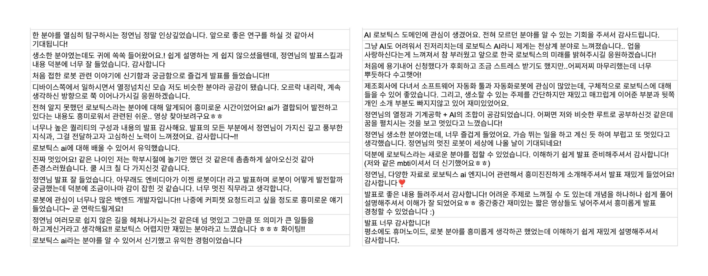
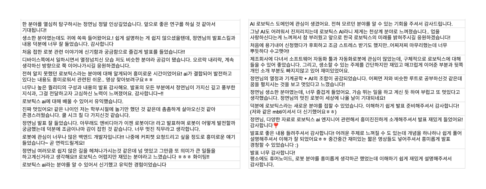

📘글또 발표 후기
2025 데이터/AI 글또 반상회에서 미완성 로보틱스 AI 엔지니어 이야기: Not Cool, Not Chic, Not Chill이라는 제목으로 발표하게 된 일련의 이야기를 이번 포스팅에 남겨보려고 합니다.
동기
올해를 시작하면서, 으레 모두가 새해의 목표를 정하듯이, 저도 2025년에 도전해볼 무언가를 찾고 있었습니다. 나름 인생의 모토가 Stop Wishing, Start Doing인데 최근에는 도전하는 일들이 없다고 생각이 들었습니다. 그래서 아주 가끔씩 생기는 근거 없는 자신감과 용기를 얻어 머릿속으로만 내가 바라는 걸 생각하지 말고 질러보자라는 생각과 함께 도전 목록들을 생각하고 있었습니다. 마침 글또에서 반상회 발표자 모집을 하고 있었고, 이 기회가 나에게는 좋은 레벨업 스테이지가 될 수 있겠다는 생각이 들어서 바로 지원했습니다. (아직까지는) 글또가 10기가 마지막이라는 아쉬움도 있었고, 이제는 학교에서 벗어나 딱히 어디에서 앞으로 나와 발표할 기회가 없었기에 좋은 기회라는 생각이 들었습니다. 오랜만에 발표 실력도 일깨울겸 나의 이야기도 정리해볼겸 겸사겸사 저에게 주어진 몇 안되는 기회중에 하나라는 생각에 들뜬 마음으로 지원했던 것 같습니다.
조금 더 솔직하게 발표 지원 동기를 이야기하자면, 저는 학교를 졸업하고 사회에서 일을 시작하면서 정체성에 대한 혼란을 많이 겪었습니다. 연구자라고 하기엔 애매하고, 엔지니어라고 부르기에도 어딘가 모호한. 로보틱스를 한다고 하기엔 부족하고, AI를 한다고 하기에도 어중간한. 회사에서도 저의 역할을 명확하게 정의하기 어려웠고, 모든 사회초년생이 그렇듯 제 실력과 역할에 대한 의구심까지 겹치면서 혼란스러운 시기를 보냈습니다. (솔직히 말하면, 지금도 그 혼란이 완전히 사라졌다고는 자신 있게 말하기 어렵습니다.) 그때 스스로가 정리되지 않아 답답할 때, 어떻게 해결해왔더라? 과거를 돌아보니, 다른 사람들에게 제 이야기를 꺼낼 때 오히려 말하면서 스스로 답을 찾아갔던 순간들이 떠올랐습니다. 그래서 반상회 발표도 마찬가지였습니다. 저를 잘 알지 못하고, 쉽게 판단하지 않을 사람들 앞에서 솔직하게 제 이야기를 풀어놓는다면, 답을 찾을 기회가 되지 않을까 싶었습니다. 솔직히 고백하자면, 반상회 발표는 다른 사람들에게 도움을 주기 위한 목적보다는, 오히려 저 스스로를 끄집어내기 위한 하나의 도구였습니다.
준비
야심찬 동기와 발 빠른 지원 태도와는 달리, 막상 준비를 시작하면서부터 많이 삐걱거리기 시작했습니다. 애초에 발표의 목적은 내 이야기를 꺼내서 스스로 정체성을 확립해보자는 것이었는데, 초안을 작성하고 구성을 고민하다 보니 한 가지 의문이 들었습니다. 사람들이 과연 내 이야기를 듣고 싶어할까? 이 생각이 들자마자, 이야기를 꺼내는 것 자체가 망설여지기 시작했습니다. 이야기의 시작점을 어디로 잡아야 할지, 어디까지 이야기해야 할지, 이러다가 괜히 삼천포로 빠지는 건 아닌지, 스토리의 흐름이 이게 맞는 건지… 머릿속에서 콘텐츠들이 둥둥 떠다니며 정리가 되지 않았습니다. 마치 질서 없는 물 위에서 표류하는 기분이었습니다.
1달 조금 넘게 남았고, 어차피 내 이야기를 하는 발표이니 별다른 자료조사가 필요 없을 거라 생각했습니다. 그래서 시간 문제는 없을 거라 판단했지만, 불행히도 머릿속에서만 방황하는 데 3주 이상을 써버렸습니다. 발표 리허설을 준비하기 직전까지도 발표의 골자를 계속 수정하며 고민했고, 정작 중요한 내용보다도 발표 제목이나 중간에 넣을 밈(meme) 같은 부수적인 요소에 신경 쓰느라 시간을 허비하기도 했습니다. 그 결과, 준비 시간을 제대로 활용하지 못한 채 시간을 흘려보내고 말았습니다.
그러는 사이 어느덧 반상회 준비위 분들 앞에서 온라인 리허설을 할 시간이 다가왔고, 그제야 이제 정말 정신 차려야 한다는 생각이 들었습니다. 동시에, 아직 이렇게 준비도 안 됐는데, 대체 왜 발표 지원을 했을까… 하는 후회도 밀려왔습니다. 결국 마음에 들지 않는 발표 자료를 꾸역꾸역 완성해 가며, 그때의 조급함과 혼란스러움을 온몸으로 느꼈던 기억이 납니다. 지금까지 수도 없이 발표를 해왔는데 이렇게까지 자신감이 없었던 적이 처음이었습니다.
그럼에도 불구하고, 항상 위기를 기회로 만들어주는 글또 분들의 도움 덕분이었을까요. 저는 정말 복이 많은 사람인 것 같습니다. 늘 주변에 대단하고 따뜻한 분들이 계셨고, 이번에도 그 손길 덕분에 무너져가던 마음을 다잡을 수 있었습니다. 발표가 정리되지 않았고, 시간 체크도 한 번도 해보지 않은 상태였으니 리허설이 잘 나올 리 없었습니다. 그런데도 다들 진지하게 제 발표를 들어주시고, 어떤 부분을 개선하면 좋을지 함께 고민해 주셨습니다. 심지어 체크할 수 있는 지표까지 제안해 주시며 혼란스러웠던 제 멘탈을 붙잡아 주셨죠.

사실 발표를 준비하면서 가장 망설였던 부분이 과연 내 이야기를 듣고 싶어할까?라는 의문이었습니다. 생각해보니 지금까지 발표들은 논문/이론 설명이나 연구 발표 등 정보 전달성이 큰 발표들이라 자료조사와 이해해서 자료를 준비하는게 힘들었지 내용을 구상하는게 힘들지 않았었습니다. 하지만 이번에는 내 이야기를 한다는 측면에서 애초에 발표의 컨텐츠 자체가 망설여지고 갈피가 잡혀지지 않으니 그 고민에 너무 오래 머물러 있었는데, (비록 격려 차원에서 배려의 말씀일 수도 있었겠지만) 이야기를 더 풀어줬으면 좋겠다, 충분히 흥미롭다는 피드백을 들으며, 마치 멈춰 있던 머릿속에 다시 재생 버튼이 눌리는 기분이었습니다. 게다가 중간중간 따뜻한 격려도 해주셔서, 자신감을 잃어가던 저에게 정말 큰 힘이 되었습니다.
리허설을 마치고 나니 발표의 갈피가 조금씩 잡히기 시작했습니다. 제목도 수정하고, 발표의 방향도 다시 고민해보면서 내 이야기를 편하게 풀어가되, 로보틱스 AI 엔지니어라는 아이덴티티를 내가 만들어가고 싶은 것이니, 이 부분을 좀 더 집중해서 소개해보자는 생각이 들었습니다. 그래서 발표 구성을 다시 정리했습니다. 내 개인적인 이야기는 후반부에 배치하되, 조금 더 사람 냄새가 나는 이야기들을 첨가하기로 했습니다. 그리고 발표 초반에는 로보틱스 AI 엔지니어라는 개념이 생소한 사람들에게 도움이 될 만한, 초심자를 위한 정보성 내용을 담기로 했습니다. 이렇게 발표의 큰 틀을 정리하고 나니, 그때부터는 발표 자료를 다듬는 시간이 더 이상 괴롭지 않았습니다. 오히려 열정을 불태우며 즐겁게 준비할 수 있었던, 정말 시간이 지나가는 지도 모르게 재밌는 시간이었습니다.
(덧. 사실 회사에서 우연히 한 동료분께서 저에게 로보틱스 개념에 대한 질문을 던지셨는데, 그 질문에 대한 답을 정리하면서 발표 자료를 다듬는 데 큰 도움이 되었습니다. 실명을 거론할 순 없지만, 항상 우연하게도 도움을 주시는 분들이 주변에 있다는 게 감사할 따름입니다. 그 마음을 담아 이곳에 간략히 남겨봅니다.)
반상회와 발표
드디어 데이터/AI 엔지니어 반상회 당일이 되었습니다. 퇴근을 하며 설렘 반, 두려움 반의 마음으로 행사장으로 향했습니다. 혹시 미리 준비할 게 있을까 싶어 일찍 도착했고, 긴장을 풀 겸 스스로에게 응원의 의미로 블루보틀에서 비싼 따뜻한 라떼를 한 잔 시켰습니다. 머릿속으로 발표 내용을 되새기며 마음을 다잡은 채, 천천히 발표장으로 들어섰습니다. 그때, 글또 반상회 준비위 분들이 마련해주신 타로 초콜릿을 받았는데, 그 안에 시킨 대로 한다면이라는 메시지가 적혀 있었습니다. 그걸 보는 순간, “그래… 준비한 대로만 하면 된다.” 그렇게 되뇌며 마음을 다잡았던 것 같습니다.
발표 시간은 생각보다 떨지 않고, 오히려 편하게 이야기할 수 있었습니다. 그리고 후에 알게된 사실이지만 시간도 딱 맞춰서 발표해서 정말 다행이다라고 생각했습니다. 아마도 청중이 글또 분들이었기 때문에 자연스럽게 편안함을 느꼈던 것 같습니다. 준비하는 동안 함께해주셨던 분들, 글또에서 만나뵈었던 분들, 익숙한 얼굴들이 발표장 곳곳에서 보여서 더욱 안심이 되었던 것 같습니다. 혹시 이 포스팅을 보시면서 제 발표자료가 궁금하신 분들은 여기에서 발표 자료들을 확인하실 수 있습니다. :)
그렇게 발표를 마치고 나서는, 반상회의 다양한 이벤트들을 마음껏 즐길 수 있었습니다. 그룹 커피챗을 비롯한 여러 프로그램들이 정말 재미있었고, 저뿐만 아니라 멋진 사이드 프로젝트를 공유해주신 장회정님의 발표도 (제 발표가 끝났다는 안도감 덕분에 더욱 편하게) 흥미롭게 들을 수 있었습니다. 또한 8조 그룹에서 만난 모든 분들과 웃으며 편하게 이야기를 나누며, 정말 즐거운 시간을 보낼 수 있었습니다. 그렇게 글또 10기 데이터/AI 반상회는 저에게 또 하나의 잊지 못할 하루로 남게 되었습니다.

후기
본격적인 후기를 시작하기 전에, 반상회 후 설문지에 남겨주신 글또 분들의 따뜻한 발표 후기를 먼저 공유하려 합니다. 이 감사한 글들을 올려두고, 앞으로도 두고두고 꺼내 보며 힘을 얻으려 합니다.(참고로, 중간에 제가 저 스스로에게 쓴 코멘트가 이스터에그처럼 숨어 있으니, 한번 찾아보시는 것도…! 😉) 실제로 발표에서 이야기했던 것처럼, 로보틱스에서 활용하는 AI에 대해 잘 모르셨던 분들이 흥미와 관심을 가지게 되었다는 점에서 무척 뿌듯했습니다. 그리고 사실, 이번 발표의 또 다른 목표였던 제 스스로의 정체성을 좀 더 다지는 것도 이루었다는 생각이 들어 더욱 의미 있는 시간이었습니다.
 

글또를 7기부터 시작하면서 지금까지 글또라는 커뮤니티에서 활동하며 저는 개인적으로 가장 많은 특혜를 받은 사람이라고 생각합니다. 글또 지속 기간으로 따져도 가장 오래한 것도 아니고, 가장 글을 많이 썼는가?의 기준으로 보아도 한번도 빠뜨리지 않고 작성한 사람도 아니지만, 저 스스로 글또에서 글을 쓰며 성장해온 자신이 가장 자랑스럽기 때문에 가장 많은 특혜를 받았다고 생각합니다. 어쩌면 가장 많은 이라는 수식어의 비교 대상은 글또의 다른 분들이 아닌, 글또가 아닌 다른 기회 등으로 성장한 것보다 가장 나를 다져준 도구가 글또라는 반증이라서, 비교 대상은 내가 나를 끌어올린 성장의 도구들 중 글또가 가장이라고 볼 수 있을 것 같아요.
이렇게 또 하나의 도전을 실행했고, 다행히도 좋은 경험으로 남아 앞으로도 큰 자양분이 될 것 같아 뿌듯합니다. 혹시라도 (글또가 지속되고) 나중에 글또 반상회가 다시 열려, 발표를 망설이는 글또 분들이 계신다면, 이 글이 작은 용기가 되었으면 좋겠습니다. 아니면, 꼭 글또가 아니더라도 자신의 이야기를 하는 것을 망설이는 모든 분들에게도 전하고 싶은 응원입니다. “이렇게 준비가 부족했던 사람도, 충분히 성장할 기회로 삼아 발표를 지원했고, 결국 잘 마무리할 수 있었구나.” 그렇게 보면서, 저처럼 한 걸음 내딛는 계기가 되었으면 좋겠습니다.
그리고, 정말 마지막으로… 수고한 나에게 박수를! 👏👏👏